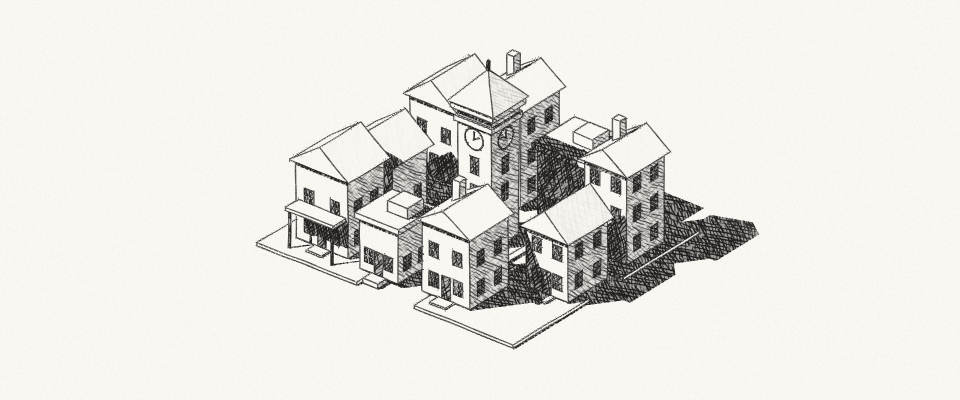
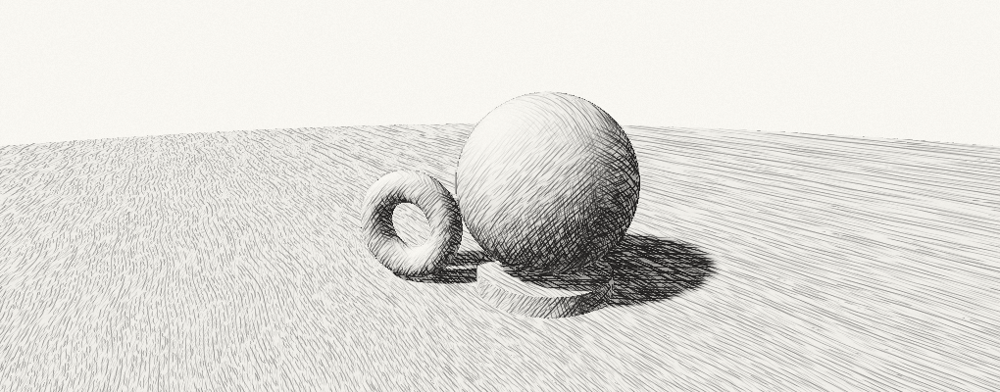
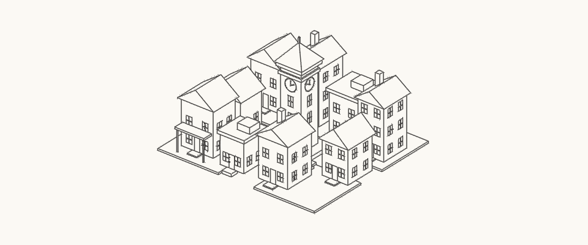
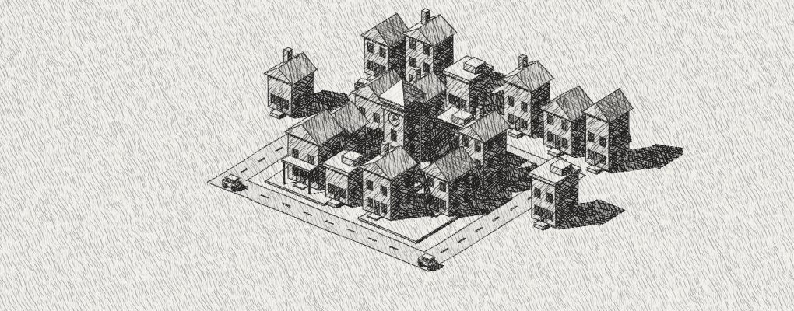

01Pencil city ↗
Sunlit paper, layered cast shadows, and imperfect architectural lines.
Choose a scene to try the hatching, outlines or lighting.

Sunlit paper, layered cast shadows, and imperfect architectural lines.

Zoom to see new strokes appear on curved surfaces.

View the fitted lines without shading.

Distant buildings, roads and four cars.